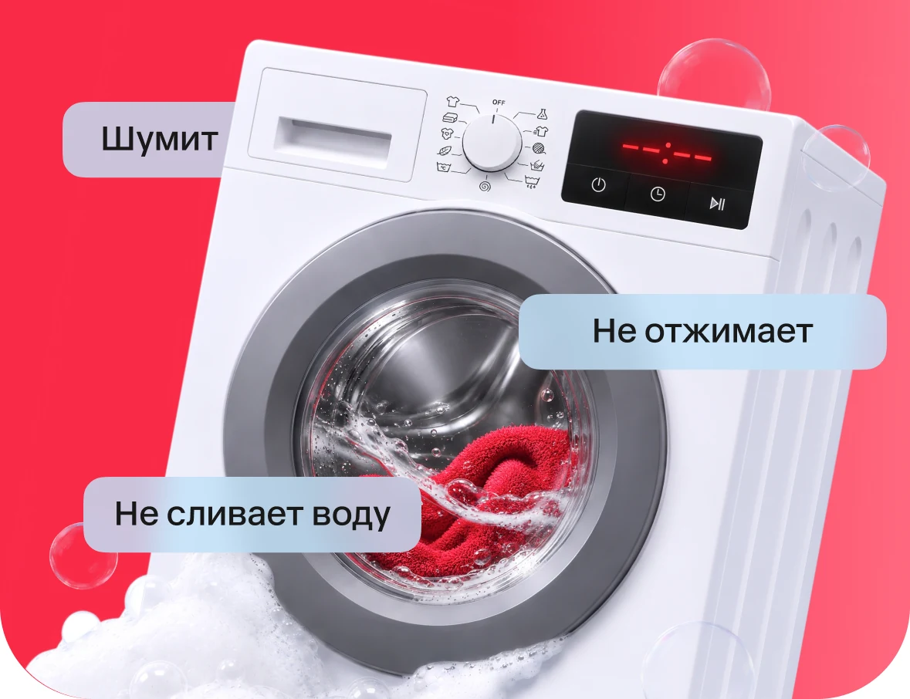
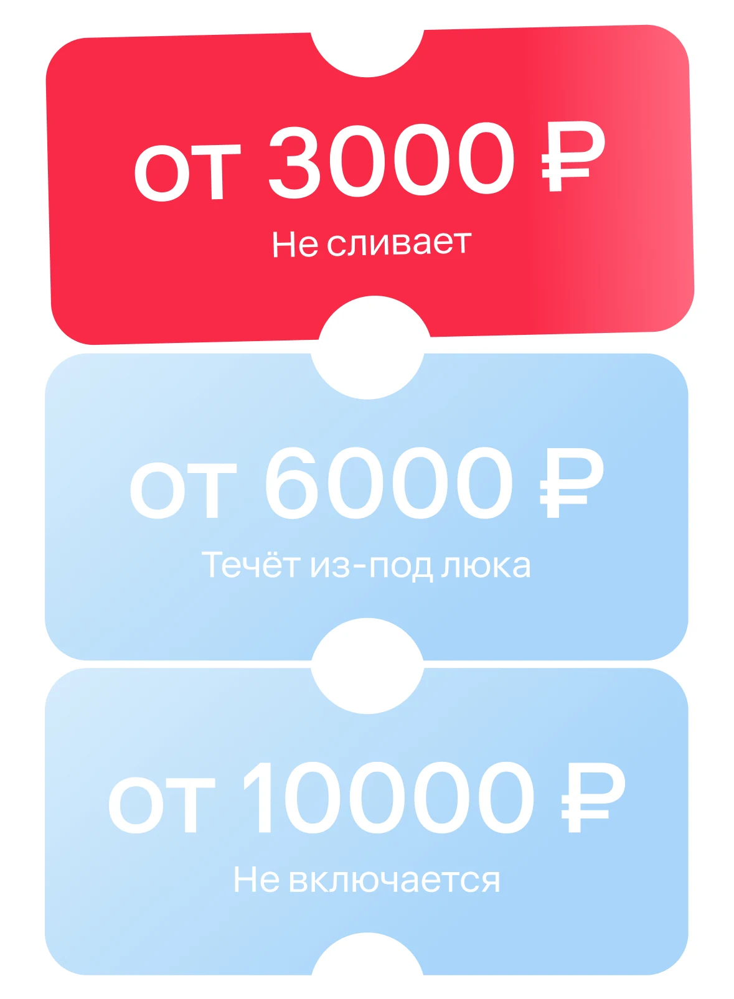
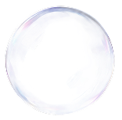
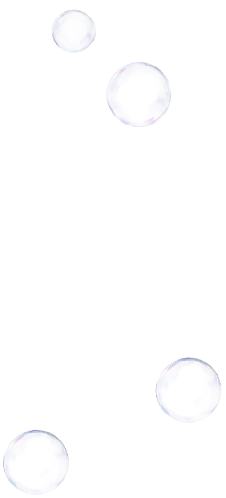
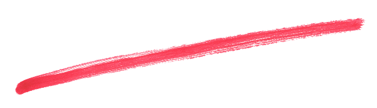
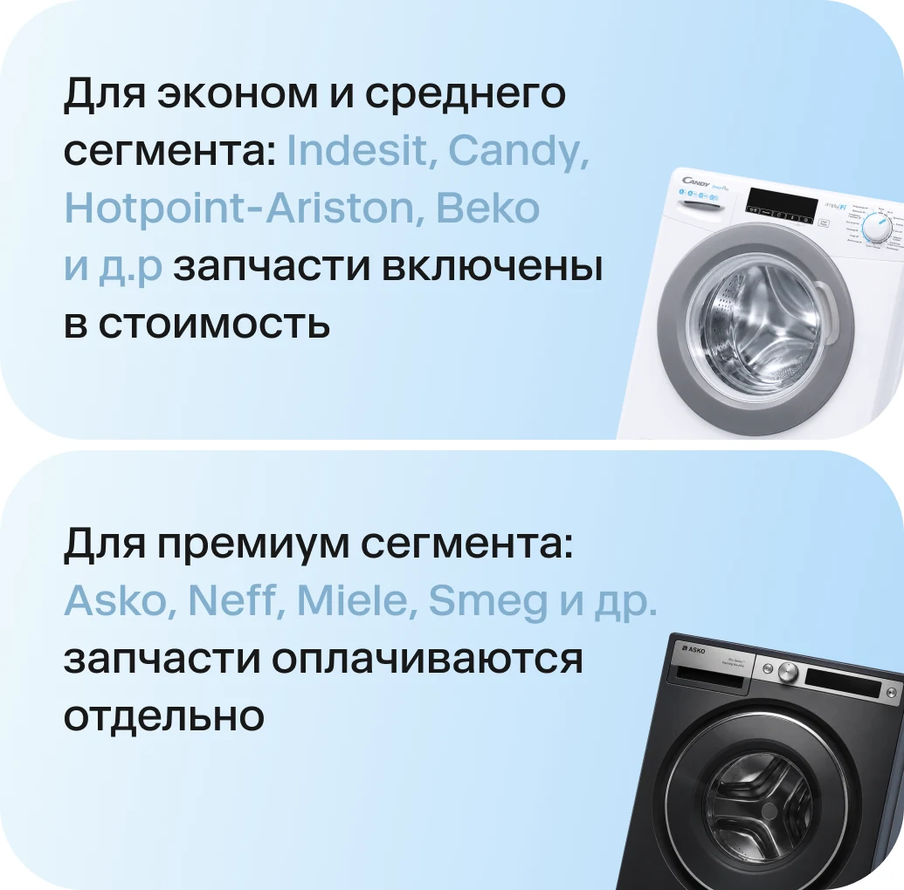

Сломалась стиралка?
Расскажите, что случилось, а проверенного мастера по ремонту найдём мы — за несколько минут

Сначала цена, потом ремонт
Подбор мастера бесплатный. А стоимость ремонта рассчитывается индивидуально — всё зависит от стиральной машины и сложности поломки

Вам не придётся


Листать объявления и отзывы
Найдём мастера с опытом в ремонте стиральных машин и рейтингом не ниже 4,8
Звонить и договариваться
Убедимся, что мастер сможет помочь в удобное для вас время

Быть в неизвестности
Покажем отзывы и анкету выбранного специалиста, чтобы вы знали, кто приедет
Вы пообщаетесь и встретитесь только с одним мастером.
Профи.ру подберёт для вас самого подходящего, и он с вами свяжется
От поломки до ремонта — три шага
Расскажите, что со стиралкой
Укажите марку и опишите, что случилось: машина не сливает воду, не включается, сильно шумит? Примерную стоимость ремонта увидите сразу
Выберите удобное время
Скажите, когда сможете встретить мастера. Мы найдём его даже день в день
Оставьте ремонт профи
Мастер приедет, определит причину поломки и предложит решения. Точную стоимость ремонта сообщит до начала работы.
А что с запчастями?

Клиенты говорят за нас
Внезапная поломка
Стиралка сломалась в самый неподходящий момент, когда скопилась гора белья. Мастер нашёлся за считанные минуты. Весь ремонт занял около часа, лишних услуг и скрытых переплат не было.
Неизвестная проблема
Я не понимала, что случилось с машинкой и в чём именно проблема, поэтому просто описала ситуацию как смогла. Мастер всё починил без лишних разговоров, навязывания услуг и внезапных доплат.
Быстрое решение
Очень доволен: мастер приехал быстро, сразу определил причину, починил тоже быстро. Главное — не пытался навязать никаких дополнительных работ и запчастей, хотя мог бы. Рекомендую, если не хотите переплачивать и нервничать.
Бережём ваше время
По дороге на работу, за чашкой кофе или между сериями любимого сериала — вызвать мастера можно в любой момент. Искать его будем мы
Вопросы и ответы
Да, если у мастера есть свободное окошко. Удобное время вы указываете при заказе
Подбор бесплатный, а стоимость работы мастера мы показываем до оформления заказа. Материалы оплачиваются отдельно — если понадобятся
Подбор бесплатный: вы платите только мастеру за работу. Сумму увидите до оформления заказа
Мы подбираем мастера и договариваемся с ним сами. После подбора вы узнаете контакты друг друга и сможете обсудить детали
Разберёмся с ситуацией и возместим до 50 000 ₽*
*Страховку предоставляет партнёр сервиса — САО «ВСК»